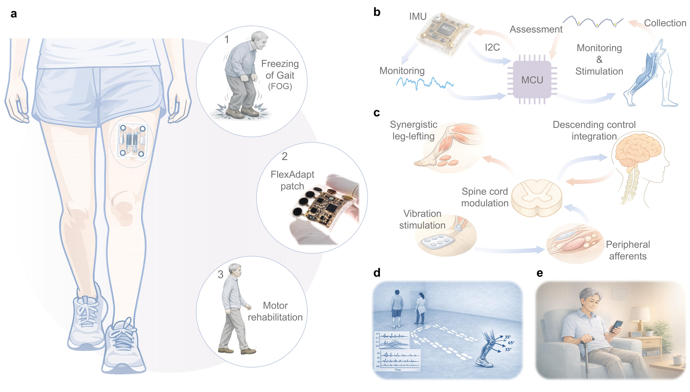
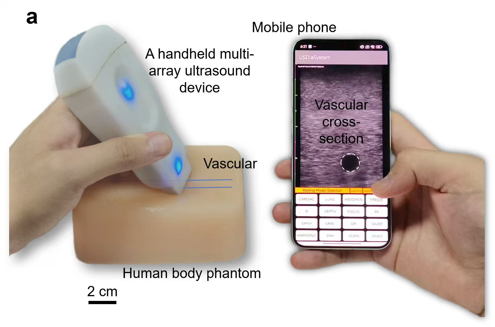

智能步态识别的柔性振动康复仪及其临床试验
面向帕金森患者步态障碍康复需求，构建具备时空振动触觉提示功能的智能电子皮肤系统， 实现面向个体运动特征的闭环、自适应、可穿戴步态干预。
创新点：柔性电子皮肤、Dynamic-DBSCAN 更新算法、个性化循环赋权与闭环调制、远程终端控制与多模式切换。
成果产出：子刊 NC 送审（一作一）、授权国家发明专利一项、软著一项、IF Student Award、生物医学工程竞赛国家三等奖。

Research
研究重点覆盖智能步态识别、端侧 AI 掌超检伤、智能足压鞋垫、柔性假肢内衬套与医工交叉融合研究。
Featured Work
面向帕金森患者步态障碍康复需求，构建具备时空振动触觉提示功能的智能电子皮肤系统， 实现面向个体运动特征的闭环、自适应、可穿戴步态干预。
创新点：柔性电子皮肤、Dynamic-DBSCAN 更新算法、个性化循环赋权与闭环调制、远程终端控制与多模式切换。
成果产出：子刊 NC 送审（一作一）、授权国家发明专利一项、软著一项、IF Student Award、生物医学工程竞赛国家三等奖。

面向胸腹部闭合性损伤的院前急救与快速分诊需求，开发端侧 AI 实时辅助的手持式超声诊断系统， 实现对气胸、心包积液及腹腔积液等关键创伤征象的快速识别与实时分诊。
创新点：集线阵、凸阵和相控阵于一体的手持式超声平台，结合轻量化边缘 AI 算法实现手机端离线实时分析。
成果产出：子刊 NC 投稿中（一作一）、JKW 优秀项目与 ZQ 演练项目、中国医疗器械创新创业大赛优胜奖。

More Projects
集成柔性足底压力阵列、IMU、柔性电路与无线传输模块，实现足底压力信息采集与步态动力学参数重建， 用于病理步态识别和连续康复评估。
开发柔性多模态传感假肢内衬套系统，实现界面动静态压力分布监测、异常受力识别及接受腔适配性评估。
围绕骨关节疾病、脊柱退变及运动功能障碍，与康复医学、骨科、影像科及超声科团队开展交叉研究， 形成从临床需求提出到智能评估与辅助决策的完整研究链条。